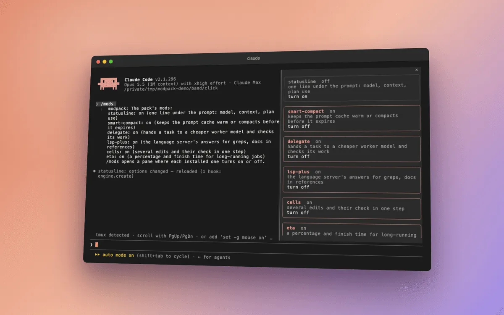

modpack
Installs the others, switches them, keeps them current.
The moment
You want all of this, but not eight things to install, update and switch.
Without modpack
Each mod would be its own install. And if another plugin’s hook hangs, Claude Code waits for it, frozen.
With modpack
One install brings all eight. /mods turns any of them off or on, right away. When another plugin’s permission or notification hook hangs, the pack stops waiting for it and tells you which one it was. Once a day it checks for a new release and updates itself, or only tells you.
Press the button to ask for a permission while another plugin’s hook hangs.
What we measured
Checked live: without the guard, no question appeared for more than a minute; with it, the question came after 10 seconds10 s10 s
Checked live
14 Oct 2026.
Every measurement for modpack
The dot is the measured change, the bar around it the 95% range, the upright line no change. Left of the line is cheaper or fewer.
- A permission hook that hangs on purpose, with and without the hook guardtime until the permission question appeared10 sChecked live. 14 Oct 2026
Where it doesn’t help
It can’t fix the hook that hangs; it only stops waiting for it.
Turn it on or off
/mods lists everything and switches it. /plugin removes the pack. Every option is in the README; the code is in modpack/.
In a real session


Play the recording